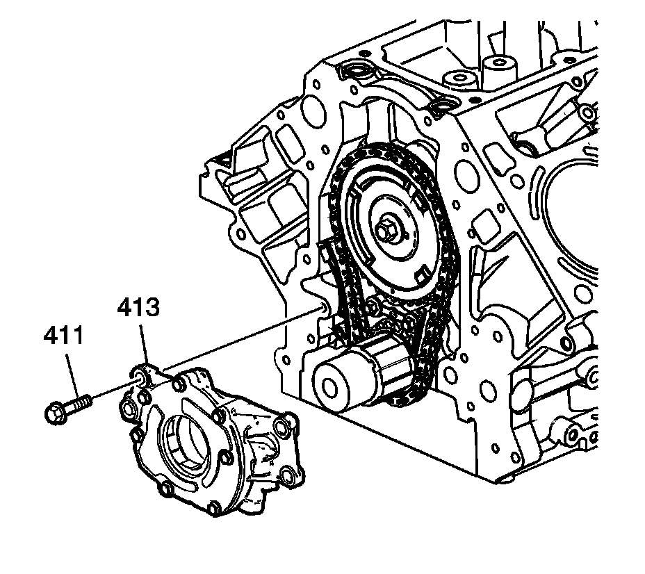

Operation CHARM
: Car repair manuals for everyone.
Home
>>
Cadillac
>>
2007
>>
Escalade ESV AWD V8-6.2L
>>
Repair and Diagnosis
>>
Engine, Cooling and Exhaust
>>
Engine
>>
Engine Lubrication
>>
Oil Pump
>>
Specifications
Oil Pump: Specifications

Oil pump (413) onto the crankshaft sprocket until the pump housing contacts the face of the engine block.
Install the oil pump bolts (411).
Oil Pump-to-Engine Block Bolts
25 N.m (18 lb ft)